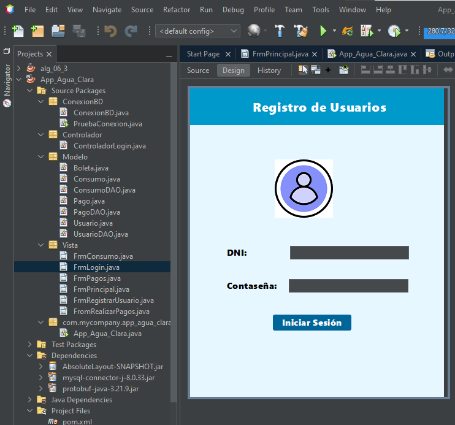

Introducción a la Semana 5
En esta quinta semana se desarrolla el proyecto principal del curso: “Agua Clara”. Este proyecto tiene como propósito diseñar una aplicación de escritorio en Java (NetBeans) para la gestión de pagos, usuarios y control administrativo de una organización dedicada a la distribución de agua potable.
Durante esta etapa se replicó la estructura base aprendida en semanas anteriores (ventanas, eventos, validaciones) y se aplicó al contexto del sistema real. La aplicación incluye un módulo de inicio de sesión funcional, y está pensada para evolucionar hacia un sistema completo con roles diferenciados.
Descripción del Proyecto “Agua Clara”
El sistema “Agua Clara” busca automatizar el registro de usuarios, pagos y boletas de servicios de agua, facilitando el control administrativo y la emisión de reportes mensuales. La aplicación fue diseñada en Apache NetBeans utilizando Java Swing como entorno gráfico.
Este sistema cuenta con diferentes tipos de usuario:
- Administrador: tiene acceso total al sistema y puede gestionar usuarios y pagos.
- Empleado: puede registrar boletas, actualizar datos y consultar pagos.
- Cliente: accede únicamente a su información de pago y consumo.
El diseño del FrmLogin permite ingresar con DNI y contraseña, y redirige a diferentes ventanas según el rol. Toda la información se gestiona mediante un modelo MVC (Modelo - Vista - Controlador), permitiendo un código limpio y organizado.
Paquetes Estructurados
Los paquetes muestra la estructuracion inicial de proyecto Usuario, Pago, Boleta y ConexionBD.
Prueba de la Aplicación
Al ejecutar el programa en NetBeans, se abre la ventana FrmLogin, donde el usuario puede autenticarse. Una vez validado, se muestra la ventana principal del sistema con acceso a los módulos de usuarios, pagos y reportes.
La interfaz mantiene un diseño limpio, profesional y coherente con la identidad del proyecto.